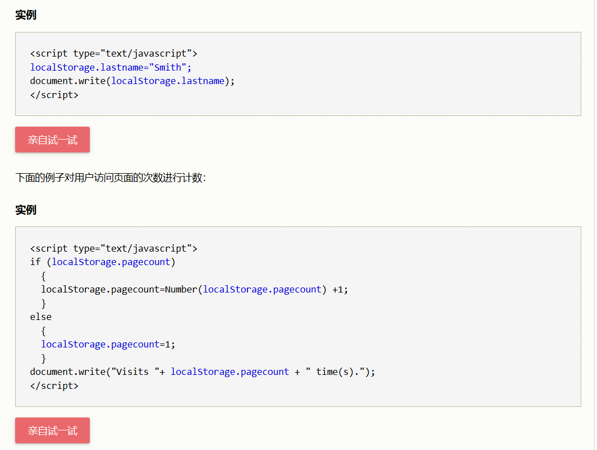
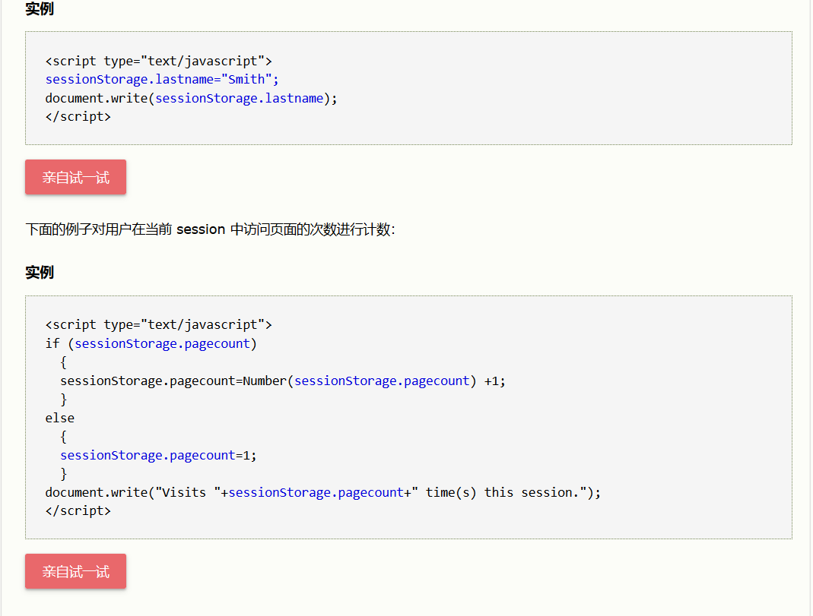

在客户端存储数据
HTML5 提供了两种在客户端存储数据的新方法：
localStorage - 没有时间限制的数据存储
sessionStorage - 针对一个 session 的数据存储
之前，这些都是由 cookie 完成的。但是 cookie 不适合大量数据的存储，因为它们由每个对服务器的请求来传递，这使得 cookie 速度很慢而且效率也不高。
在 HTML5 中，数据不是由每个服务器请求传递的，而是只有在请求时使用数据。它使在不影响网站性能的情况下存储大量数据成为可能。
对于不同的网站，数据存储于不同的区域，并且一个网站只能访问其自身的数据。HTML5 使用 JavaScript 来存储和访问数据。
localStorage 方法存储的数据没有时间限制。第二天、第二周或下一年之后，数据依然可用。
创建和访问 localStorage：

sessionStorage 方法针对一个 session 进行数据存储。当用户关闭浏览器窗口后，数据会被删除。
创建并访问一个 sessionStorage：
